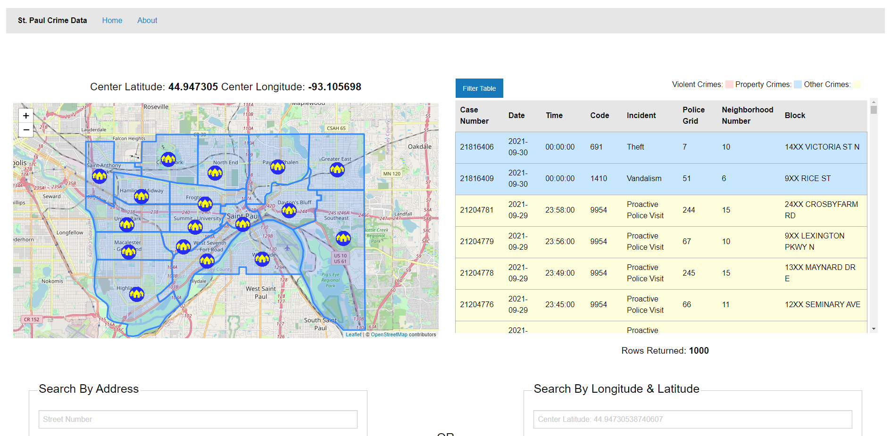

Projects
Project 1 - St. Paul Crime Data Dynamic Website
This is a website that I built with a group of students in Web Development. It uses VUE.JS, Leaflet API, Nominatim API, and a custom API we created for filtering through St. Paul Crime Data.
Features:
- Table updates in real time as you pan/zoom to only include crimes visible on the map
- Select crimes from the table to create a marker on the map
- Search for crimes by Address or Longitude & Latitude
- Filter the table based on a number of parameters
- note: website is not currently live but source code can be found Here

PROJECTS
Project 1
This is a website that I built with a group of students in Web Development. It uses VUE.JS, Leaflet API, Nominatim API, and a custom API we created for filtering through St. Paul Crime Data.
Features:
- Table updates in real time as you pan/zoom to only include crimes visible on the map
- Select crimes from the table to create a marker on the map
- Search for crimes by Address or Longitude & Latitude
- Filter the table based on a number of parameters
- note: website is not currently live but source code can be found Here